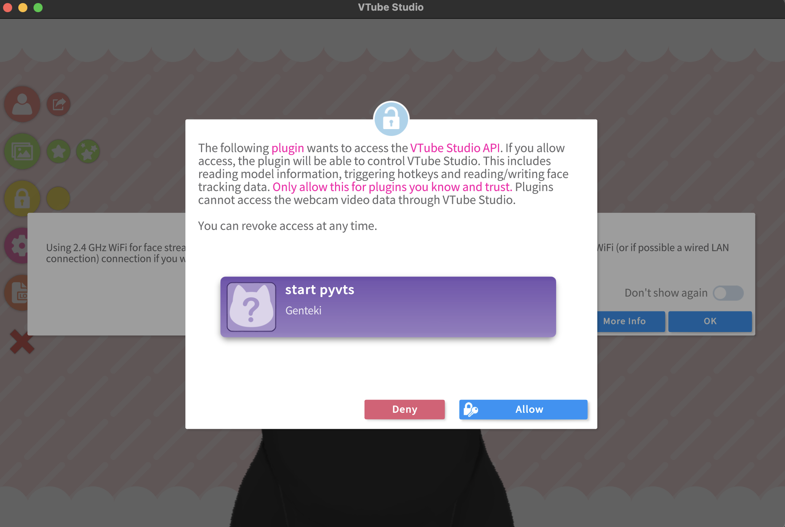

Basic Usage#
First import packages
import asyncio, pyvts
Then specify your plugin info, you can use the default value and skip this step,
plugin_info = {
"plugin_name": "start pyvts",
"developer": "Genteki",
"authentication_token_path": "./token.txt"
}
Use async prefix to define a main function. Creat vts instance in main.
async def main():
myvts = pyvts.vts(plugin_info=plugin_info)
await myvts.connect()
Continue with main function, to get access of more features, we need to get authenticated from Vtube Studio API.
await vts.request_authenticate_token() # get token
await vts.request_authenticate() # use token
Then you can do whatever you want, like add a new parameter/set values for parameter.
new_parameter_name = "start_parameter"
await vts.request(
vts.vts_request.requestCustomParameter(new_parameter_name)
) # add new parameter
After all, use vts.close() to disconnect from VTS and add main function to async quene.
if __name__ == "__main__":
async.run(main())
After sucessfully connected, you will see in VTubeStudio settings

In vts.request_authenticate_token, it will request a token from Vtube Studio API, and save it in local file. While requesting token, a dialog will show up in VTube Studio app. Then, vts.request_authenticate will use the token to get accessed.
